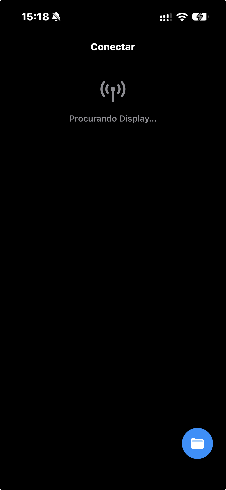

Roteiros organizados
Adicione e edite roteiros no Control para encontrar rapidamente o texto que vai usar.
TP Teleprompter · Control + Display
Adicione, edite e organize seus roteiros. Conecte o Control ao Display por Bluetooth e acompanhe a leitura com mais liberdade.

Feito para acompanhar seu fluxo
Do primeiro rascunho até a apresentação, mantenha o roteiro à mão e controle a leitura no seu próprio ritmo.
Adicione e edite roteiros no Control para encontrar rapidamente o texto que vai usar.
Conecte o Control ao Display para enviar o roteiro e os comandos de reprodução.
Organize blocos com tags e compartilhe as anotações do diretor durante a preparação.
Leitura clara
Controle tamanho, alinhamento, cores e espelhamento para adaptar a leitura à sua montagem.
Controle em movimento
Veja os tempos e acompanhe o andamento enquanto o texto flui na tela do Display.
Tenha o TP com você
O TP é formado pelos apps Control e Display. O link de download será adicionado assim que a publicação na App Store estiver disponível.
Suporte
Tem dúvidas sobre conexão, roteiros ou uso do Display? Fale com o suporte do TP.